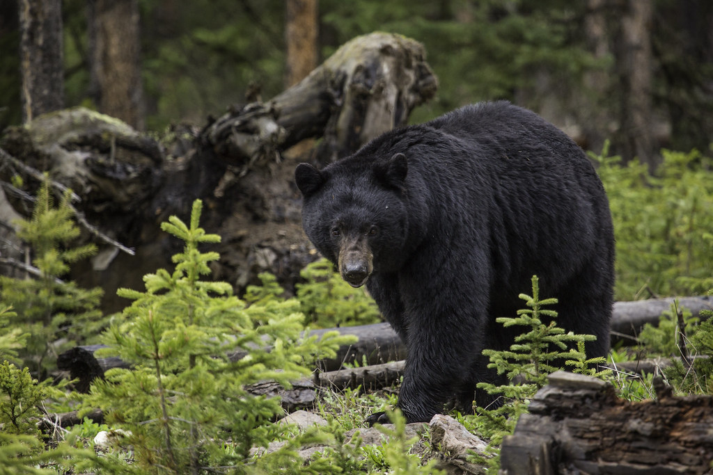

Among the many dangers faced by hikers on the JMT are bears. This area of California has a large population of black bears. While the threat of an attack is relatively low, they can be extremely dangerous when provoked and pose a threat to hikers food supplies. To mitigate this, hikers are encouraged to carry bear spray and make sure to keep all food in bear-proof containers.
Logistics
The John Muir Trail typically takes between 2-4 weeks to complete, depending on the hiker's pace and itinerary. Hikers must obtain permits in advance, as well as make arrangements for transportation to and from the trailheads. There are also several resupply points along the trail where hikers can restock on food and supplies.
Safety

Another important thing for hikers to be cautious of is mountain weather. Thunderstorms are frequent in the afternoon and can be violent. This is especially concerning at high elevations where limited cover from wind and lightning is available. Hikers should try to check weather frequently and plan campsites away from high-elevation passes with more cover.